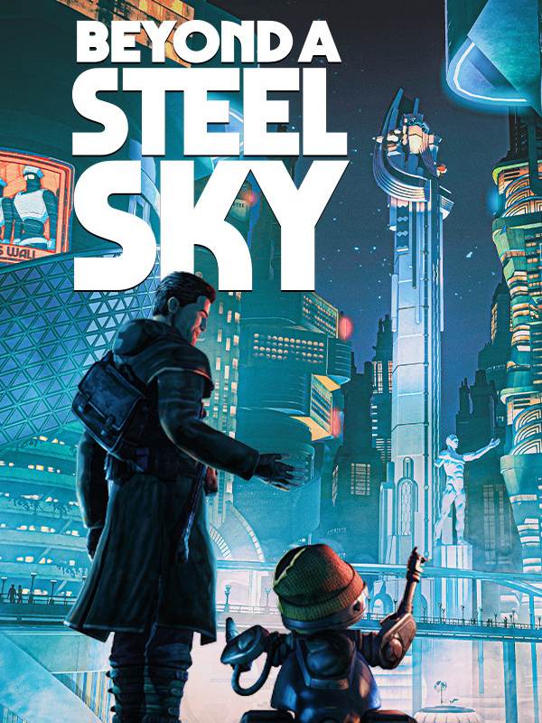

Beyond a Steel Sky
Beyond a Steel Sky
Details
|
 |
|
| Playtime | Not Played |
| Last Activity | Never |
| Added | 2023-08-11 0:29:07 |
| Modified | 2025-12-19 11:05:13 |
| Completion Status | Not Played |
| Library | Steam |
| Source | Steam |
| Platform |
PC (Linux) PC (Windows) |
| Release Date | 2020-06-25 |
| Community Score | 69 |
| Critic Score | 76 |
| User Score | |
| Genre |
Adventure Indie Puzzle |
| Developer |
Revolution Software |
| Publisher |
Microids Revolution Software Soft Source |
| Feature |
Single Player |
| Links |
Steam App Store (iPad) Wikipedia GOG Official Website Twitch Playstation Nintendo |
| Tag |
Action Adventure Choices Matter Comedy Cyberpunk Dystopian Futuristic Hacking Indie Mystery Point & Click Post-apocalyptic Puzzle Sci-fi Sequel Singleplayer Story Rich Stylized Third Person Thriller |
Description
From Charles Cecil, creator of the Broken Sword series, with art
direction by Dave Gibbons, legendary comic book artist behind
‘Watchmen’, comes ‘Beyond A Steel Sky’, the long awaited sequel to the
cult classic ‘Beneath a Steel Sky’.
You are Robert Foster. A child has been abducted in a brutal attack. You have vowed to bring him home. The trail has led you to Union City, one of the last remaining mega-cities in a world ravaged by shattering wars, and political meltdown.
Union City is a utopia, its people loving life under the control of an altruistic AI: ever-attentive androids, designer living, piazzas and bars. What’s not to love? But this City has a dark underbelly...
‘Beyond a Steel Sky’ is a dramatic, humorous, cyberpunk thriller in which engaging puzzles drive a fast-paced narrative set in a dynamic gameworld that responds to – and is subverted by – the player’s actions.
The World
An adventure set within a dynamic world, populated by wilful characters driven by motivations that the player can subvert. In combination with a unique hacking tool, multiple solutions to puzzles emerge from player choices.

The Story
Unravel dark conspiracies, defeat a terrifying antagonist in this dramatic, humorous, cyberpunk thriller, which explores contemporary themes: social control, AI, and total surveillance.

The puzzles
Intelligent puzzles are interwoven with an intriguing dramatic narrative to deliver a compelling gameplay experience.

The Look
A beautifully detailed, comic-book styled world, from the mind of legendary comic artist Dave Gibbons.

You are Robert Foster. A child has been abducted in a brutal attack. You have vowed to bring him home. The trail has led you to Union City, one of the last remaining mega-cities in a world ravaged by shattering wars, and political meltdown.
Union City is a utopia, its people loving life under the control of an altruistic AI: ever-attentive androids, designer living, piazzas and bars. What’s not to love? But this City has a dark underbelly...
‘Beyond a Steel Sky’ is a dramatic, humorous, cyberpunk thriller in which engaging puzzles drive a fast-paced narrative set in a dynamic gameworld that responds to – and is subverted by – the player’s actions.
Features:
The World
An adventure set within a dynamic world, populated by wilful characters driven by motivations that the player can subvert. In combination with a unique hacking tool, multiple solutions to puzzles emerge from player choices.
The Story
Unravel dark conspiracies, defeat a terrifying antagonist in this dramatic, humorous, cyberpunk thriller, which explores contemporary themes: social control, AI, and total surveillance.
The puzzles
Intelligent puzzles are interwoven with an intriguing dramatic narrative to deliver a compelling gameplay experience.
The Look
A beautifully detailed, comic-book styled world, from the mind of legendary comic artist Dave Gibbons.